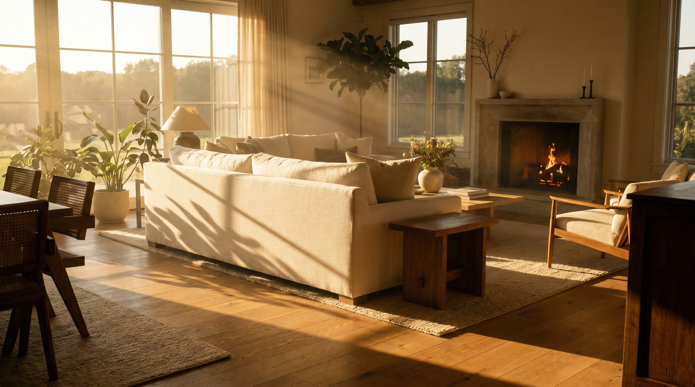
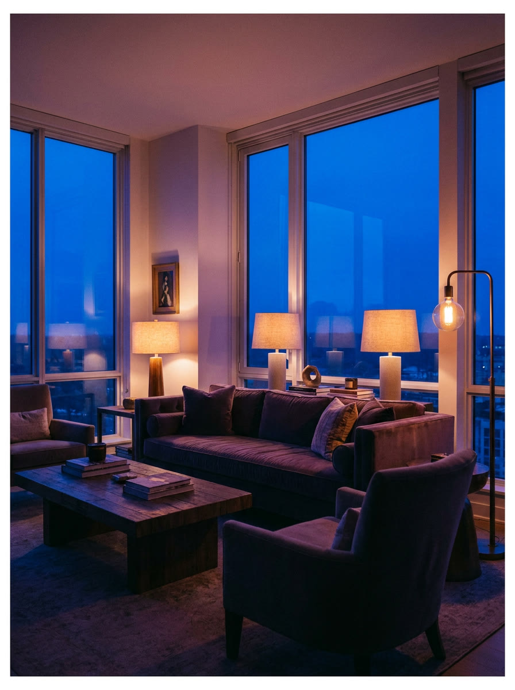
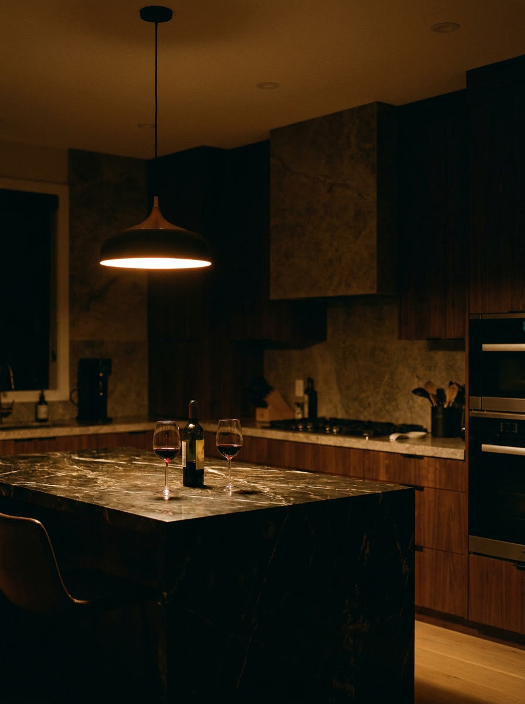
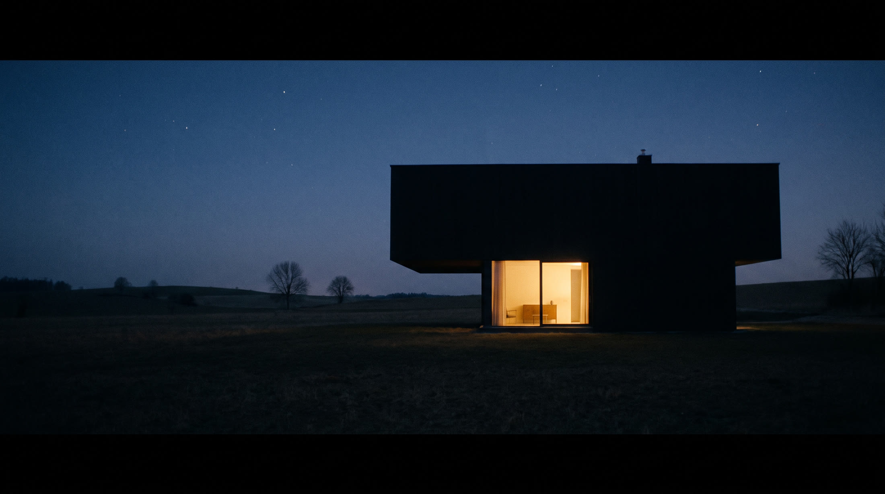

Smart Installers presents one evening, perfectly installed
The hour
between
Scroll from golden hour to midnight. The house will keep up.

The sun does
its last work
Shades rise a final few degrees to let the low light in. Nothing electric competes with it; the house knows better than to interrupt a sunset.
Solar-tracked shades · Daylight-first scenes
The lamps
take over
As the sky turns cobalt, every lamp in the house rises to meet it over four unhurried minutes. Nobody touched anything. Nobody ever does.
Circadian handover · Four-minute fades
The house
leans closer
One pendant, two glasses, and the playlist at conversation level. Every other room has already gone quietly to sleep behind you.
Zone retreat · Speech-level audio · Candle scenesThe house
exhales
One touch by the bed. Sixty seconds of fading light, doors confirming themselves, shades sealing the dark. The last thing you hear is nothing.
Goodnight ritual · Confirmed locks · True dark
And tomorrow, again, without a thought
Let us tune
your evening
hello@smartinstallers.com
One visit at golden hour. We will take it from there.